المسابقة البرمجية للجامعات:

وهي اختصار لـِ Syrian Collegiate Programming Contest
وهي الفعالية التقنية الأضخم على مستوى الجمهورية العربية السورية حيث تجمع نخبة العقول البرمجية من كافة الجامعات السورية العامة والخاصة والافتراضية
لماذا تُعد هذه المسابقة محطة مصيرية للطلاب ؟
- إثبات الكفاءة : الجامعة الافتراضية السورية أثبتت في السنوات الاخيرة قوة طلابها وقدرتهم على منافسة الجامعات التقليدية وجهًا لوجه في المراكز الأولى
- التشبيك المهني : يحضر المسابقة ممثلوا كبرى شركات التكنولوجيا في سوريا، وهي فرصة ذهبية للحصول على "عروض عمل" حتى قبل التخرج
- بطاقة العبور : الفوز في هذه المسابقة هو الطريق الوحيد لتمثيل سوريا في المسابقة العربية ثم المسابقات العالمية
تفاصيل يوم المسابقة ؟
- الجو الحماسي : يتنافس مئات الطلاب في قاعة واحدة بتركيز عالٍ جداً
- البالونات : في هذه المسابقة، لا تُعطى العلامات بالورقة، بل يتم تعليق بالون ملون لكل فريق عند حله لمسألة ما؛ كل لون يرمز لمسألة معينة، مما يخلق جواً من الحماس والمنافسة المرئية
- لوحة المتصدرين : تظهر النتائج لحظياً على شاشات ضخمة، ويتم تجميدها في الساعة الأخيرة لزيادة عنصر المفاجأة والتشويق
صور للمسابقات البرمجية
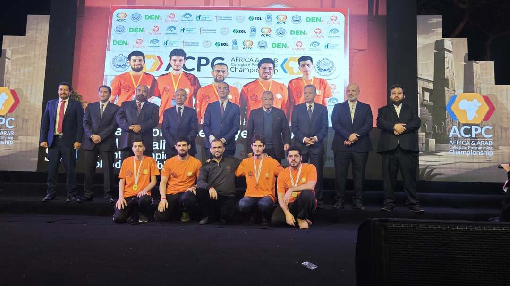
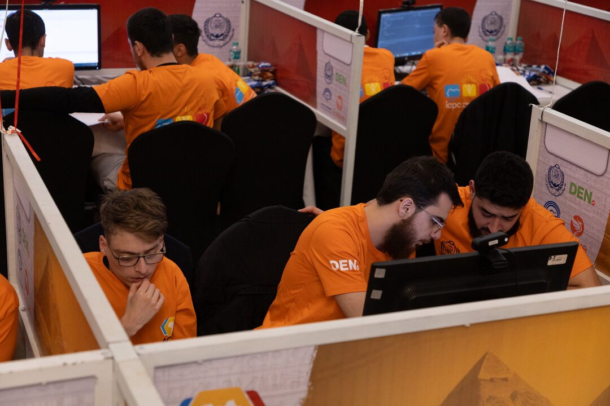
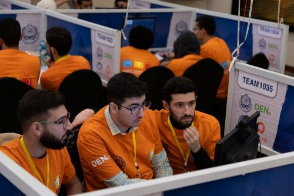
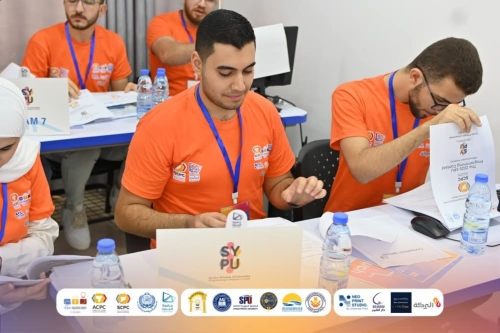
التاريخ: 15 كانون الاول
المكان : دمشق - المعهد العالي للعلوم التطبيقية والتكنولوجي
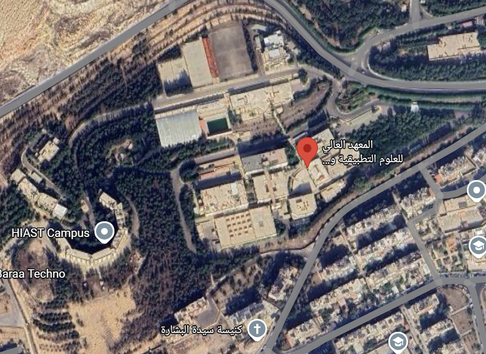
KPT برنامج التدريب البرمجي للأطفال اليافعين

برنامج Kids Programming Training هو مبادرة رائدة من الجامعة الافتراضية السورية، تهدف إلى نقل المعرفة التقنية من المستوى الجامعي إلى الأجيال الناشئة، لتحضيرهم ليكونوا مهندسي المستقبل
ما هو هذا البرنامج ؟
- الفئة المستهدفة: يستهدف الأطفال واليافعين من سن 8 إلى 15 سنة
- المنهجية: يعتمد البرنامج على تبسيط مفاهيم البرمجة المعقدة وتحويلها إلى ألعاب وتحديات تفاعلية تناسب أعمارهم
- المدربون: يتم الإشراف على التدريب من قبل نخبة من أساتذة ومدربي الجامعة الافتراضية السورية المختصين
ماذا يتعلم الطلاب في هذا البرنامج ؟
- استخدام لغات برمجية لبناء الألعاب والقصص التفاعلية : (Visual Programming)البرمجة التفاعلية
- التفكير الخوارزمي: تعليم الأطفال كيفية تحليل المشكلات وتفكيكها إلى خطوات منطقية
- أساسيات الروبوتيك والذكاء الاصطناعي: مقدمات بسيطة تفتح آفاقهم نحو التقنيات الحديثة
- بناء المشاريع: في نهاية كل دورة، يقوم اليافعون ببناء مشروعهم الخاص وعرضه
صور برامج تدريب الأطفال
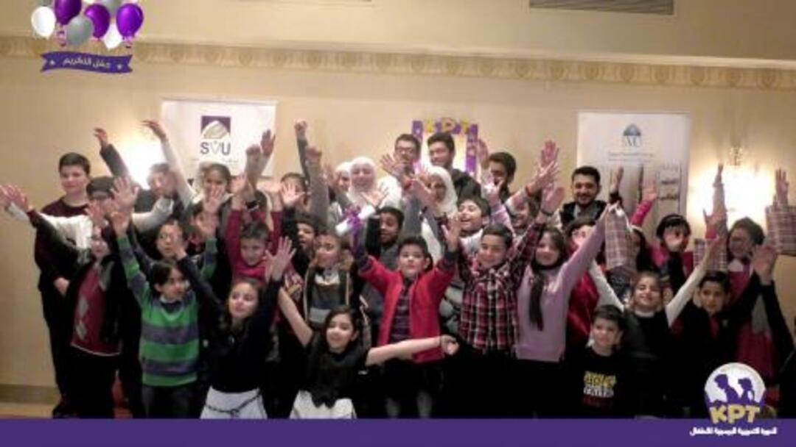
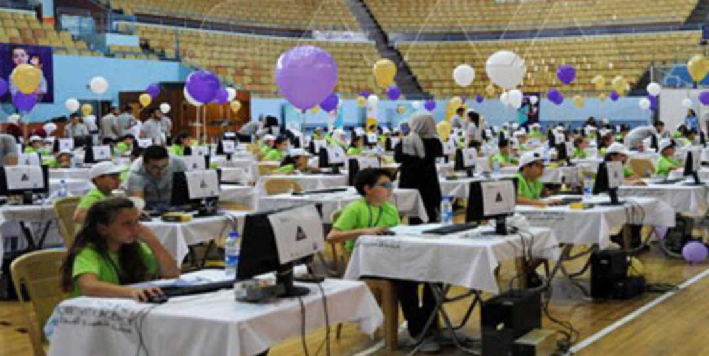
التاريخ: 25 حزيران
المكان: مراكز نفاذ الجامعة الافتراضية


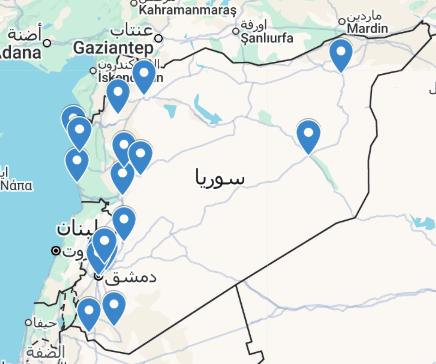
مبادرة ضوء

مبادرة ضوء هي مبادرة تطوعية غير رسمية وغير ربحية، مستقلة وغير تابعة لأي جهة أو منظمة تستهدف في عملها شريحة المكفوفين وضعاف البصر في مختلف المراحل والأماكن
تم إطلاقها بتاريخ 1 كانون الأول 2018
رؤية المبادرة:
تسعى لتأمين فرص تعليم عادلة بالنسبة للأشخاص ذوي الإعاقات البصرية وتقديم الخدمات التي تساعدهم في إتمام وتطوير تعليمهم في مختلف المراحل
ما هي اهداف المبارة:
- دعم المكفوفين وضعاف البصر في متابعة تعليمهم المدرسي والجامعي والدراسات العليا من خلال تقديم مجموعة من الخدمات اهمّها: التسجيل الصوتي للمحتوى العلمي، وإعداد المحتوى وتهيئته لطباعته بطريقة برايل
- توفير أرشيف صوتي ذو جودة عالية مرفوع على الإنترنت والمراجع المطلوبة لتسهيل الدراسة لجميع المكفوفين المتابعين لتحصيلهم العلمي
- مواكبة تجدد المحتوى العلمي وتطوّر المناهج وتحديث التسجيلات
- تعزيز الثقافة الشبابية التطوّعية من خلال تشجيع المتطوعين ودعمهم
موقعنا ؟
لا يوجد مقر لمبادرتنا على أرض الواقع، حيث يتم العمل والتنسيق بشكل كامل عبر الإنترنت (بريد الكتروني ومواقع التواصل الاجتماعي) وبهذا تكون امكانية التطوع متاحة بشكل أكبر لجميع الراغبين من أي مكان وفي أي وقت
اعضاء مبادرةالضوء:
تعمل ضوء حالياُ بفريق مؤلف من حوالي 600 متطوع متوزّعين في فريقي التسجيل الصوتي ومحتوى برايل
الجهات والمنظمات التي تم التشبيك معها:
- الجامعة الافتراضية السورية
- تجمع الشباب السوري
- الجمعية السورية للوقاية من العمى في حلب
ما هي إنجازاتنا ؟
- تسجيل برنامج الإجازة في الحقوق الخاص بالجامعة الافتراضية السورية وإتاحته عبر كل من قناة ضوء على اليوتيوب وموقع الجامعة الافتراضية
- تسجيل الكتب والمحاضرات والمراجع العلمية للطلاب المكفوفين في المراحل الجامعية والدراسات العليا في مختلف الفروع
التاريخ : 17 شباط
صور لمبادرة ضوء
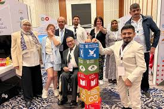
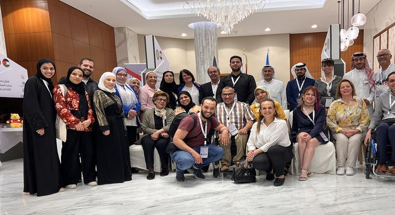
مسابقة الذكاء الاصطناعي السوري:

وهي تُعرف بـِ Syrian AI Hackathon
هي المنصة التقنية الأبرز في سوريا لتمكين المبتكرين من بناء حلول ذكية تواكب الثورة التقنية العالمية
لماذا تُعد هذه المسابقة محطة مصيرية للطلاب ؟
- بناء حلول مستقبلية: تتيح للطلاب فرصة فريدة لتحويل الأفكار النظرية إلى نماذج ذكاء اصطناعي (AI Models) تخدم المجتمع وتواكب التطور العالمي
- إثبات القدرة الابتكارية: الجامعة الافتراضية السورية تدعم طلابها للمشاركة بفعالية في هذه المبادرات لتعزيز قدرتهم على الابتكار التقني وتطوير نماذج متقدمة
- تمكين المبتكرين: تُعتبر جسراً يربط بين المهارات البرمجية واحتياجات سوق العمل الحديثة التي تعتمد بشكل كلي على البيانات والحلول الذكية
تفاصيل يوم المسابقة ؟
- العصف الذهني المكثف: يعمل المشاركون كفرق برمجية لبناء وتدريب نماذج ذكاء اصطناعي خلال فترة زمنية محددة وبتركيز عالٍ
- العرض والتحكيم (Pitching): لا تقتصر المسابقة على الكود فقط، بل يقوم كل فريق بعرض فكرته وآلية عمل الخوارزمية أمام لجنة من الخبراء والمختصين
- النتائج الذكية: يتم تقييم المشاريع بناءً على دقة النموذج (Accuracy)، الابتكار، ومدى قابلية الحل للتطبيق الفعلي على أرض الواقع
صور لمسابقات الذكاء الاصطناعي
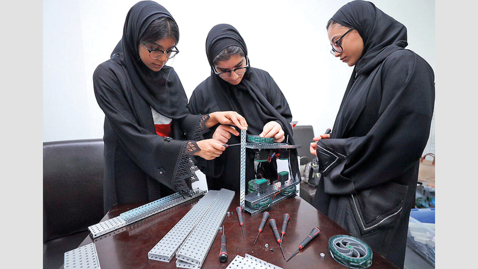
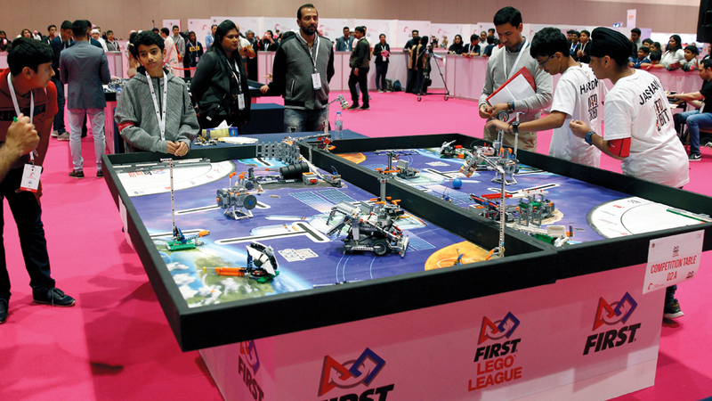
التاريخ:
- التاريخ: 20 شباط
المكان: دمشق - مراكز نفاذ الجامعة الافتراضية السورية (أو قاعة المؤتمرات الكبرى).
مبادرة تمكين لتأهيل الخريجين:

وهي تُعرف بـِ Tamkeen Initiative
هي الجسر الأكاديمي والمهني الذي أطلقته الجامعة الافتراضية السورية لربط الخريجين الجدد بسوق العمل، حيث تهدف إلى سد الفجوة بين التعليم النظري والاحتياجات الفعلية للشركات البرمجية والهندسية
لماذا تُعد هذه المبادرة مهمة ؟
- لتأهيل المهني المتكامل: تزود الخريجين بالمهارات الأساسية مثل كتابة السير الذاتية الاحترافية وإدارة المقابلات الوظيفية بنجاح
- جسر لسوق العمل: تفتح المبادرة قنوات تواصل مباشرة مع كبرى الشركات السورية، مما يسهل الحصول على فرص تدريبية ووظيفية
- المهارات الناعمة (Soft Skills): تركز على تطوير مهارات التواصل والقيادة والعمل الجماعي، وهي مهارات لا تقل أهمية عن الكفاءة التقنية للمهندس
تفاصيل المبادرة ؟
- ورشات عمل تفاعلية: تتضمن جلسات تدريبية مكثفة بإشراف خبراء من سوق العمل لنقل الخبرات الميدانية للطلاب
- محاكاة المقابلات: يتم إجراء مقابلات تجريبية تحاكي الواقع لكسر حاجز الخوف وتطوير أداء الخريجين أمام أصحاب العمل
- تقييم المسارات: يحصل كل طالب على تقييم شامل لمساره المهني مع نصائح لتطوير نقاط الضعف وتعزيز نقاط القوة
صور من الورشات التدريبية
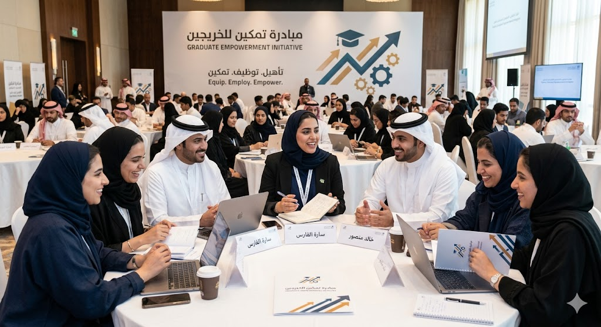
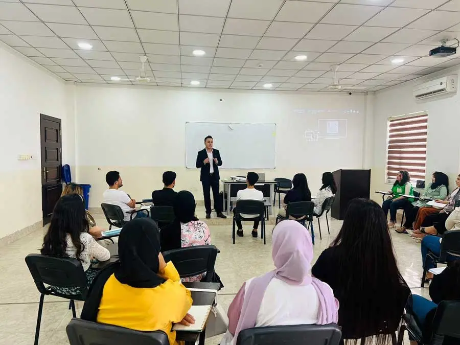
التاريخ: 5 تشرين الثاني
المكان: حلب-جامعة حلب.
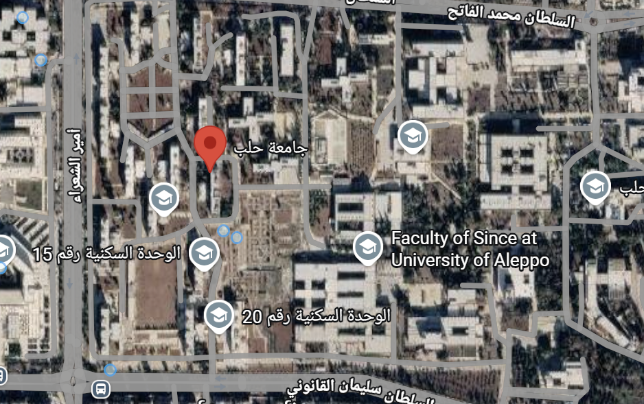
دورة حماية البيانات والأمن السيبراني:

Cybersecurity & Data Protection Program
برنامج تدريبي مكثف صممه خبراء من الجامعات السورية لنقل المعرفة التقنية من الجانب النظري إلى التطبيق العملي المحترف
لماذا يُعد هذا البرنامج التدريبي محطة فنية للطلاب؟
- التطبيق العملي (Hands-on): لا يقتصر البرنامج على المحاضرات، بل يتضمن مختبرات افتراضية لتعلم كيفية اكتشاف الثغرات وتأمين السيرفرات الشخصية والمؤسساتية
- الحماية الاستباقية: يتعلم المتدربون بناء الجدران النارية (Firewalls) وإدارة أنظمة كشف التسلل، مما يعزز مهاراتهم في حماية البيانات الحساسة من الهجمات الإلكترونية
- شهادة تخصصية: الحصول على شهادة من الجامعة الافتراضية في هذا المجال يعتبر إضافة قوية جداً للسيرة الذاتية لأي مهندس معلوماتية أو مهندس نظم اتصالات
تفاصيل المنهج التدريبي؟
- أساسيات التشفير: دراسة طرق تأمين البيانات وحمايتها من التجسس والاختراق أثناء النقل أو التخزين
- أمن الشبكات: تدريب مكثف على بروتوكولات الحماية وتأمين الشبكات اللاسلكية والداخلية ضد الوصول غير المصرح به
- الاستجابة للحوادث: تعلم كيفية التعامل مع الهجمات بعد وقوعها، وتحليل الأدلة الرقمية لضمان استمرارية العمل وتقليل الأضرار
صور من الورشات التدريبية
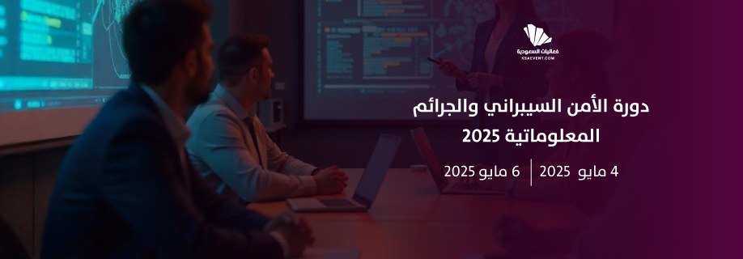
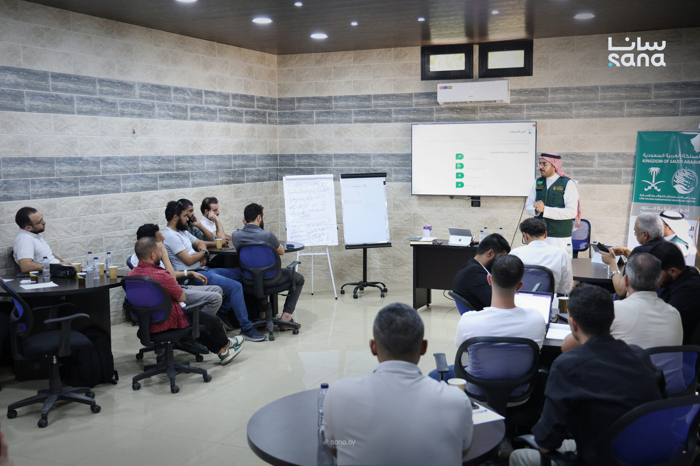
التاريخ: 21 تشرين الأول
المكان : التعلم عن بُعد (عبر منصة الجامعة الافتراضية) مع جلسات عملية في مراكز النفاذ
ورشة القيادة وإدارة المشاريع (Agile):

وهي تُعرف بـِ Agile Project Management Workshop
ورشة عمل تخصصية تهدف إلى تزويد المهندسين وطلاب السنة الأخيرة بالمهارات اللازمة لإدارة المشاريع التقنية المعقدة، من خلال تعلم منهجيات العمل المرنة (Agile) التي تضمن تسليم المشاريع بأعلى جودة وفي الوقت المحدد
لماذا تُعد هذه الورشة محطة إدارية هامة؟
- تحويل الأفكار إلى مهام: يتعلم المشاركون كيفية تقسيم الأفكار الكبيرة إلى مهام صغيرة قابلة للتنفيذ والمتابعة بدقة
- إدارة المخاطر والجدولة: تزويد المشاركين بمهارات الجدولة الزمنية وتوزيع الموارد البشرية والمادية لضمان استقرار المشروع
- المرونة في التنفيذ: التركيز على منهجية الـ Agile يتيح للمهندس التكيف مع التغييرات المفاجئة في متطلبات المشروع دون خسارة الوقت أو الموارد
تفاصيل المنهج التدريبي؟
- قيادة الفرق التقنية: تعلم كيفية موازنة المهام بين أعضاء الفريق وتحفيز المبدعين للوصول إلى أفضل النتائج
- أدوات الإدارة الحديثة: تدريب عملي على استخدام الأدوات الرقمية لتنظيم سير العمل ومراقبة تطور المشروع لحظة بلحظة
- دارة الجودة والميزانية: فهم كيفية الحفاظ على معايير الجودة العالية مع الالتزام بالميزانية المحددة للمشروع
صور من ورشات إدارة المشاريع
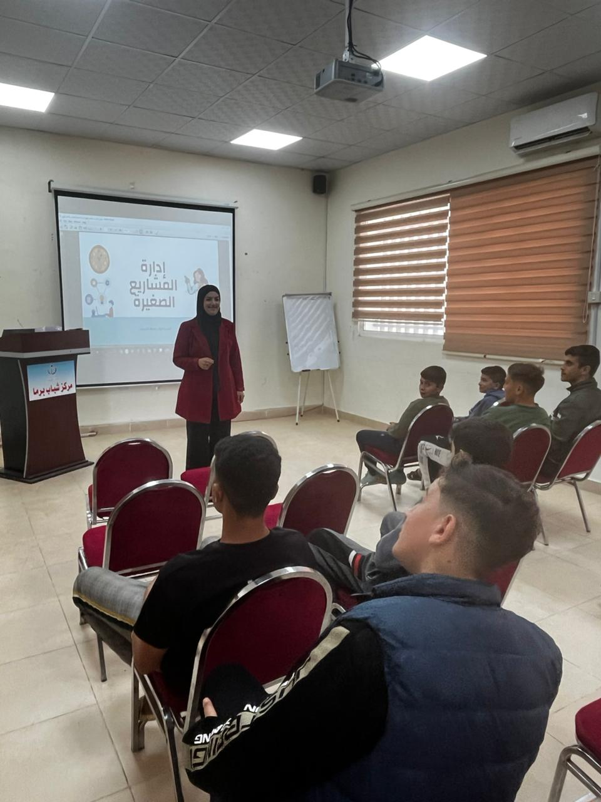
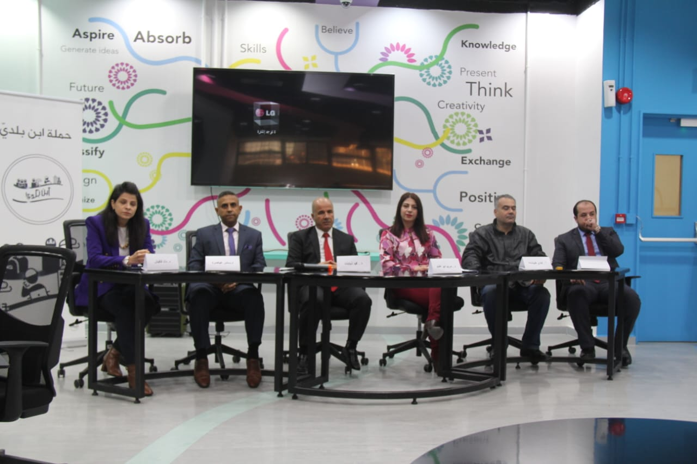
التاريخ: 21 أيلول
المكان: مركز التدريب المستمر - الجامعة الافتراضية السورية
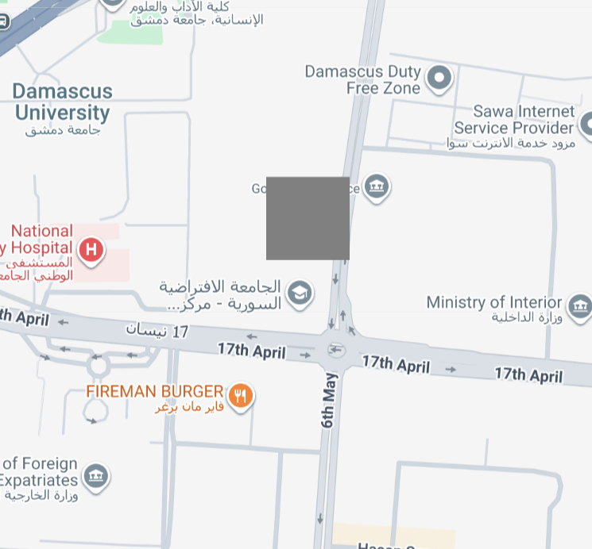
مسابقة المحتوى الرقمي العربي

تعتبر هذه المسابقة واحدة من اهم المبادرات التي تقودها الجامعة الافتراضية السورية بهدف إغناء المحتورى العربي على الشبكة العالمية
اهداف المسابقة:
- تعزيز المحتوى العربي: سد الثغرات في المحتوى العلمي والتقني والثقافي العربي على الإنترنت
- دعم المبدعين: توفير منصة لطلاب الجامعة لإظهار مهاراتهم في صناعة المحتوى (خاصًة طلاب الهندسة المعلوماتية)
- التحول الرقمي: المساهمة في بناء مجتمع معرفي يعتمد على مصادر عربية موثوقة
مجالات المسابقة:
- المحتوى العلمي والتقني: كتابة مقالات أو صناعة فيديوهات تشرح مفاهيم برمجية أو هندسية
- المنصات التفاعلية: تصميم تطبيقات أو مواقع توفر خدمة معرفية باللغة العربية
- إدارة المعرفة: تبسيط المناهج الجامعية وتحويلها إلى وسائط رقمية تفاعلية
لماذا يجب أن تشارك ؟
إذا كنت تمتلك مهارة في الكتابة، التصميم، أو البرمجة، فإن هذه المسابقة تمنحك الفرصة لترك بصمة تقنية باسمك في أرشيف الجامعة بالإضافة إلى الحصول على شهادات تقديرية وجوائز تحفيزية تدعم سيرتك الذاتية كمهندس مستقبلي
صور لمسابقات المحتوى الرقمي العربي
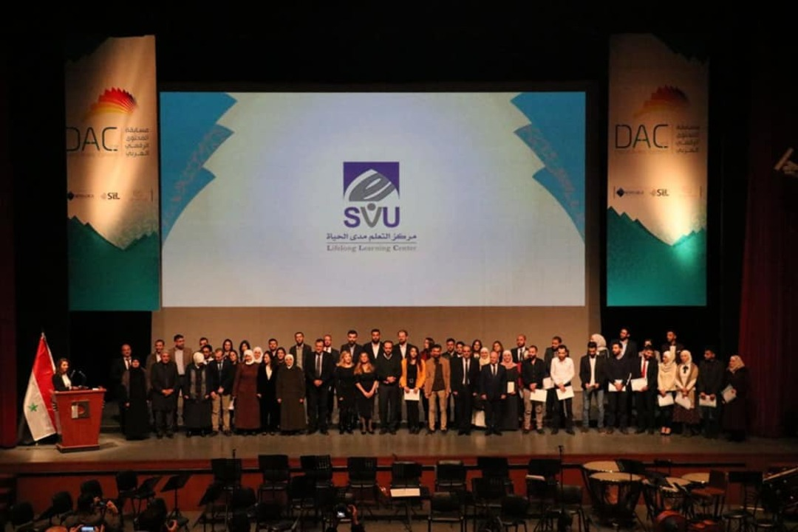
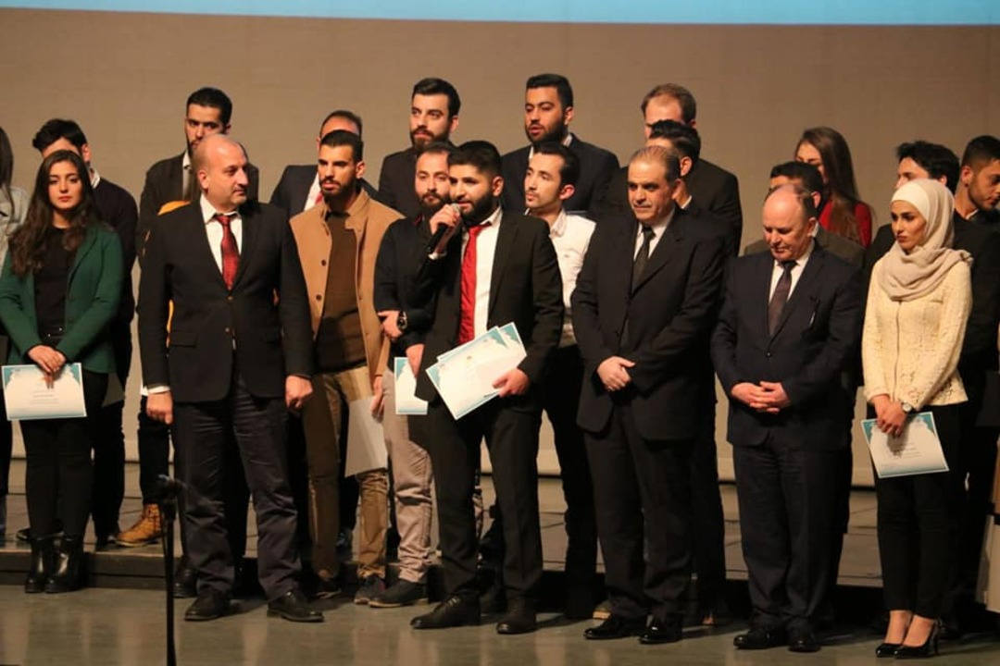
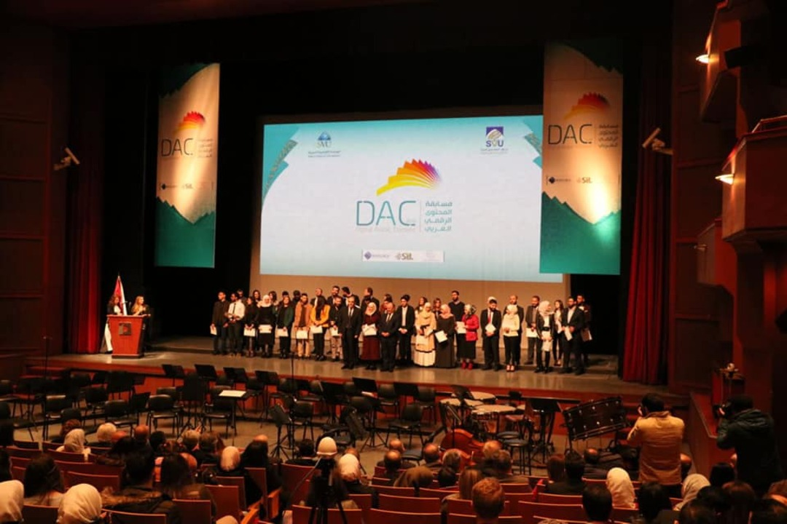
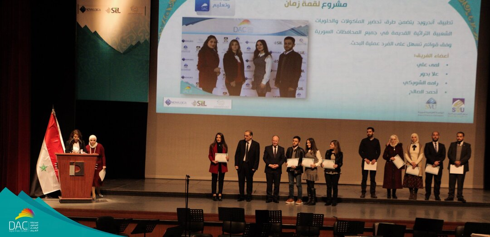